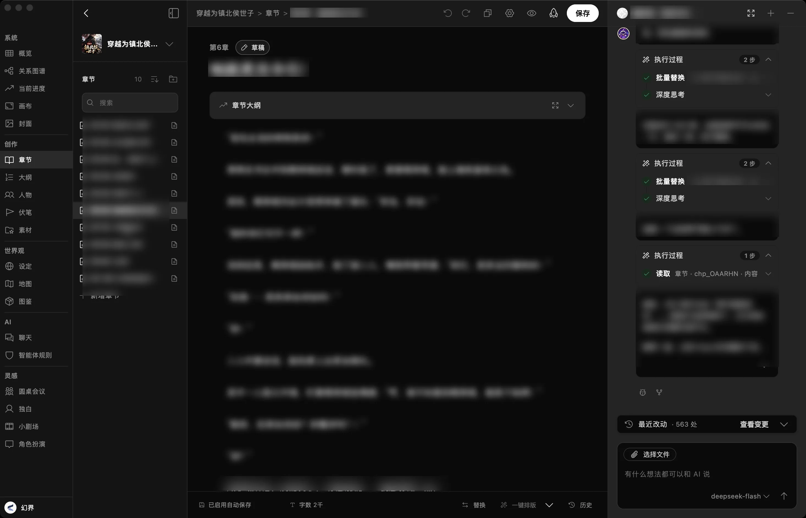
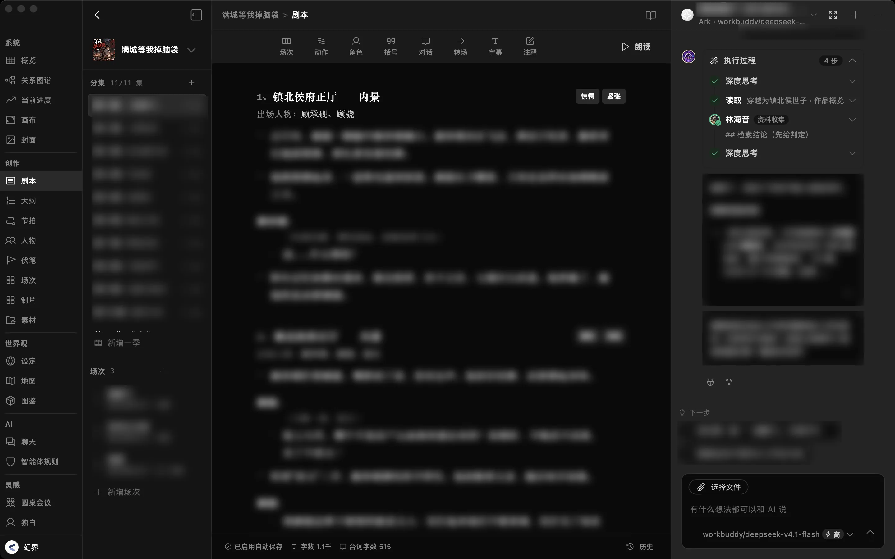
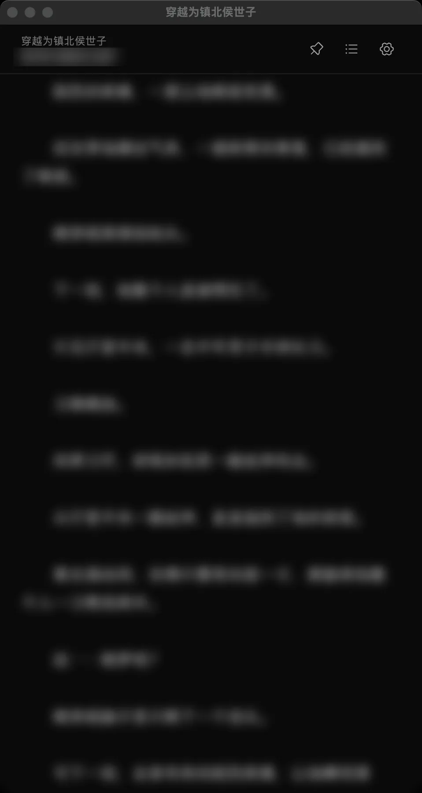
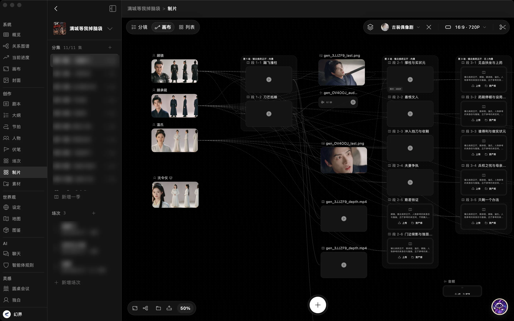
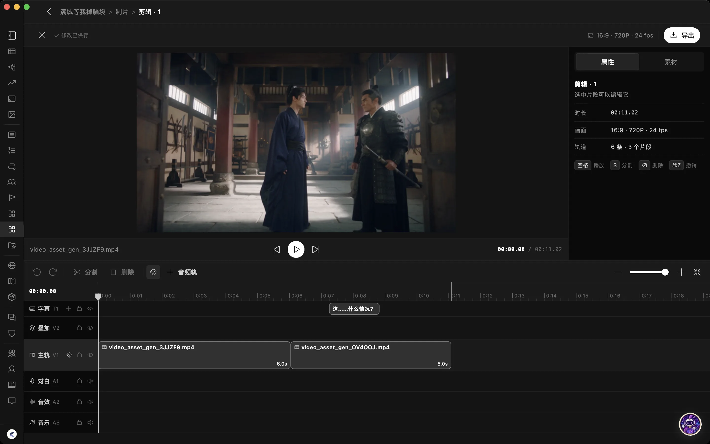
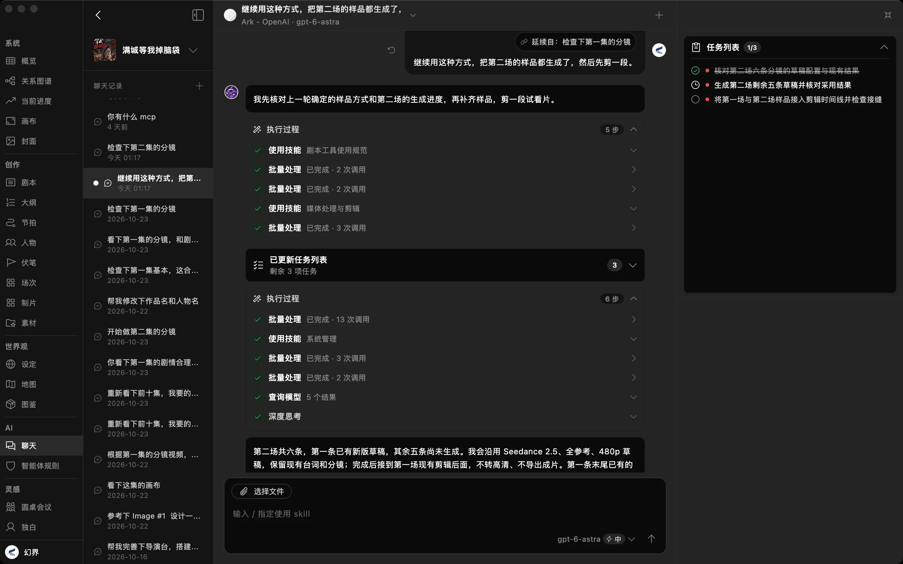
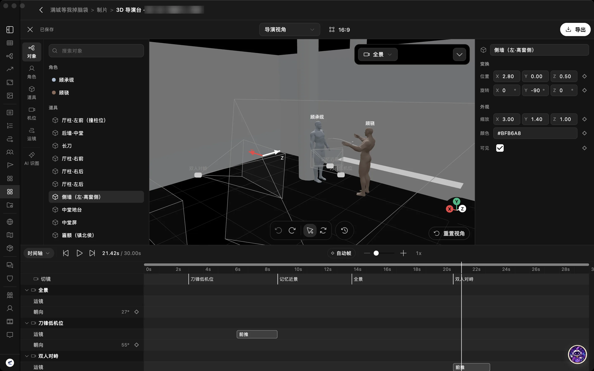

AGENT NATIVE · AI 创作工作台
小说、剧本、画布、导演台、剪辑，都是智能体的工具。
一句话，从原著走到成片。
把第一卷改编成短剧，做出第一集的成片
›把第一卷改编成短剧，做出第一集的成片





SC.03 AGENT NATIVE
小说、剧本、画布、导演台、剪辑台都以工具形式提供。智能体自己拆解任务、按顺序执行、检查结果。
按需检索章节、设定和人物，不用每次重新交代上下文，角色和画面前后保持一致。
任务列表、执行过程、改动记录全程可见，不满意随时回滚。多个智能体分工协作，Skill 与 MCP 还能继续扩展它的能力。

SC.04 STUDIO
智能体用的工具，就是你用的工作台。哪一步想自己来，随时接过去。

SC.05 LOCAL FIRST
作品只保存在你自己的设备上。模型用你自己的 Key：直连各家官方接口，或者接入 NewAPI 等聚合网关和自建服务，兼容 OpenAI 与 Anthropic 协议。
Claude · GPT · Gemini · DeepSeek · GLM · Qwen · Kimi
Seedream · GPT Image · Gemini Image · Qwen Image
Seedance · MiniMax H3 · Wan · Kling